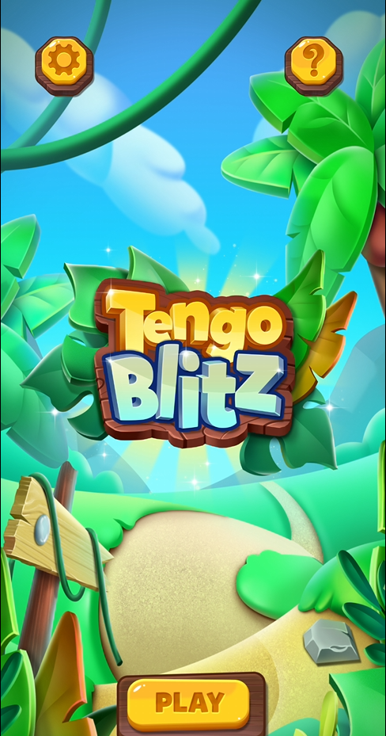
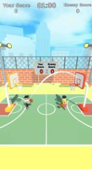
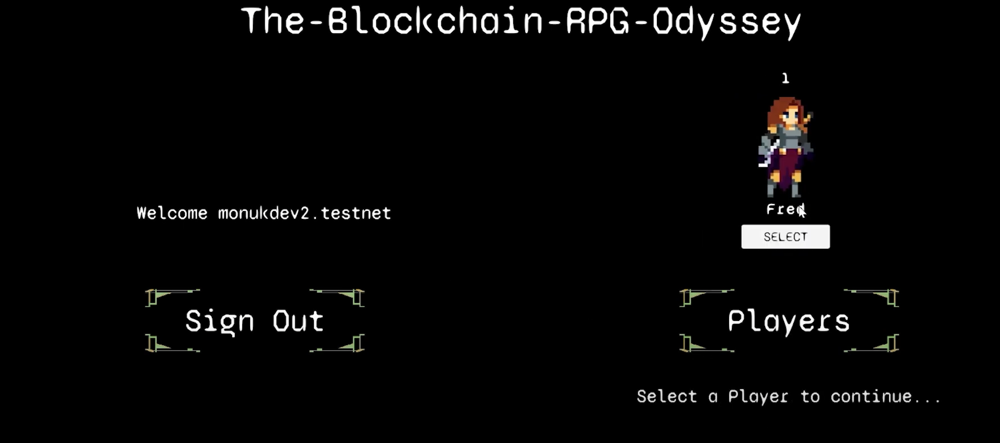
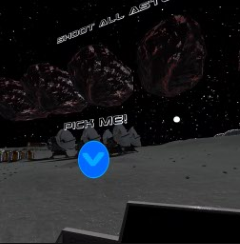
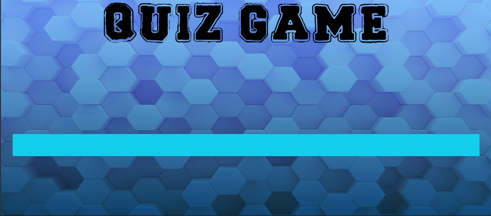
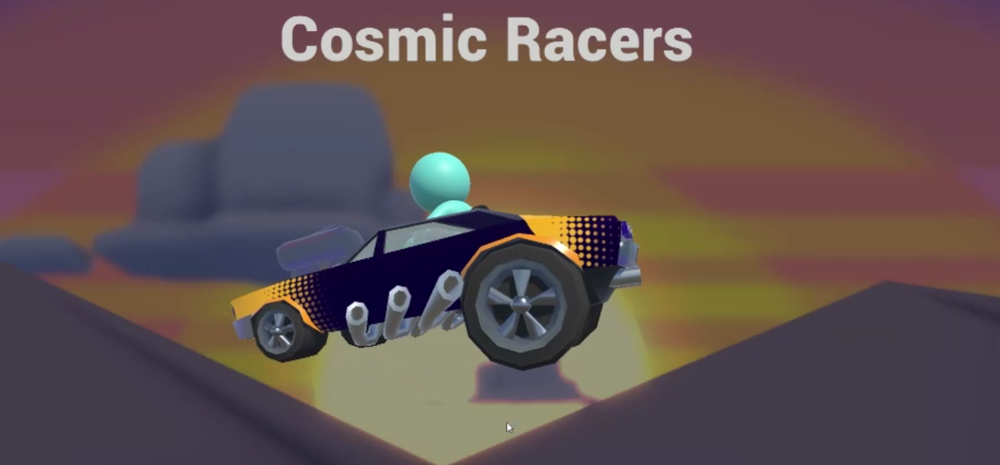

Projects
Company Projects

Freelance Projects




Personal Projects




I’m Monu Kumavat, a Game Developer with 6+ years of experience building over 50 games and apps using Unity and C#. I’ve led projects like Bingo Free World (10M+ downloads) and worked extensively with AR/VR, real-time APIs, and multiplayer networking. Whether I’m optimizing performance or experimenting with innovative features, I’m driven by a passion for delivering memorable, seamless gameplay experiences. Over the years, I’ve also enjoyed mentoring junior developers and fostering collaborative teams to bring creative ideas to life.
Tennis Live Score is a real-time score tracking app focused on Tennis matches, ATP Tours, and tournaments, developed in just 5 days using Unity and C#. The app uses RapidAPI’s third-party sports API to fetch and display live match data. Players can view detailed match information, including live scores, player names, their country representation, current rankings, and even explore match history from previous years. I built a robust API integration system to manage live data streaming, handle JSON parsing, and update the UI in real time. The interface is clean, mobile-friendly, and optimized for quick access to key stats, with smooth transitions and real-time refresh capabilities. This project showcases my ability to work with external APIs, create dynamic data-driven UIs, and deliver fully functional applications under tight deadlines.
A Unity-based VR game where players pick up a gun to destroy waves of asteroids speeding from left to right, earning points toward future weapon upgrades and purchases. Developed with the XR Interaction Toolkit and Oculus Integration, this project features smooth motion tracking, immersive 3D environments, and escalating challenges as asteroids accelerate over time. It marks my first venture into VR and showcases the potential for expanded gameplay mechanics and upgrades in future iterations.
Developed as a two-person project for my Master’s coursework, this game marked my first foray into multiplayer development. I focused on the core gameplay logic and car mechanics, leveraging Photon for real-time player connections and competitive racing. We also implemented a login/register system using PHP and phpMyAdmin, ensuring each player’s car upgrades and unlocks are securely stored and never lost. Working closely with my teammate, who handled the saving mechanics, taught me the value of collaboration and gave me hands-on experience with advanced networking and data persistence in game development.
A dynamic trivia experience powered by OpenAI’s ChatGPT and DALL·E plugins, tailored to different age groups. The game generates quiz questions, matching images, and multiple-choice options for each round. Players must answer before time runs out to advance, and future updates will allow using earned coins to buy hints—adding a strategic layer for all ages.
As my final M.Sc. project, this 2D RPG explores integrating blockchain technology directly into gameplay. By using the NEAR wallet plugin, players can buy or sell NFT items—both to enhance their in-game experience and to trade in the real world. The game features a robust skill tree, including sword mastery, dodging, teleportation, and more. Players can also collect and craft resources to battle bosses and other enemies. Through this project, I gained hands-on experience with blockchain fundamentals and discovered how to seamlessly incorporate NFTs into traditional game mechanics.
A fast-paced 2.5D fruit-slicing game prototype built in Unity in just 20 days for a freelance partner. Players slice fruits with a knife while avoiding bombs—one wrong slice, and it’s game over! This project introduced a fresh spin on the classic fruit-cutting genre, emphasizing quick reflexes and strategic dodges. Despite a tight deadline, it was an exciting challenge that yielded a polished, engaging result.
A fast-paced arcade puzzle where you move or place blocks to guide a bouncing ball into the hoop. I used Unity’s Line Renderer to visualize the ball’s trajectory, making the gameplay more intuitive and satisfying. Each level ramps up in difficulty with faster ball movement and more complex layouts, challenging players to strategize quickly and adapt on the fly.
Tengo Blitz is a fast-paced puzzle game inspired by Tetris, developed in Unity using C# over a span of 20–25 days for a freelance partner. Unlike traditional match games, Tengo Blitz challenges players to strategically place and combine blocks so their total sums up to 10—clearing the stack only when the sum is exact. This adds a brain-teasing layer of math-based logic to the classic falling-block formula. I implemented a grid-based system to manage tile placement and stack control, along with smooth tile animations and visual effects powered by DoTween and Unity Animator. The game also features animated power-ups, including the Hammer (to destroy selected tiles) and Meow (a cat-themed power that clears rows or patterns). The interface is designed using Unity’s responsive UI tools, with animated feedback, timer-based gameplay, and real-time scoring. Tengo Blitz is a polished, engaging game that demonstrates my skills in logic-driven mechanics, animation, and delivering high-quality freelance projects on a tight timeline.
Helix Ball Drop is a highly addictive hyper-casual game developed in Unity using C#, featuring simple yet satisfying mechanics and infinite level progression. Built as a freelance project, the core gameplay revolves around guiding a bouncing ball through rotating platforms, avoiding obstacles while progressing downward. The game includes Unity Ads integration, offering rewarded video ads and interstitials, along with In-App Purchase (IAP) functionality that allows players to permanently remove ads for a smoother experience. Players can also upgrade their ball, enhancing its appearance or abilities, adding a layer of personalization and progression. The project uses Unity's animation tools for bounce and destruction effects, ensuring smooth, polished feedback. With its endless level design, progressively increasing difficulty, and quick restart loop, Helix Ball Drop keeps players engaged for long sessions. This project highlights my ability to implement monetization, in-game economy, and polish addictive gameplay loops in a short development cycle.